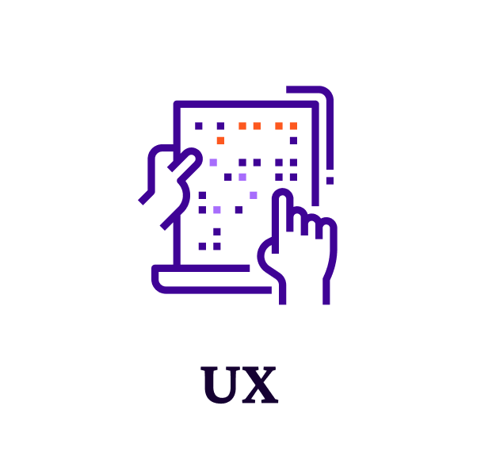
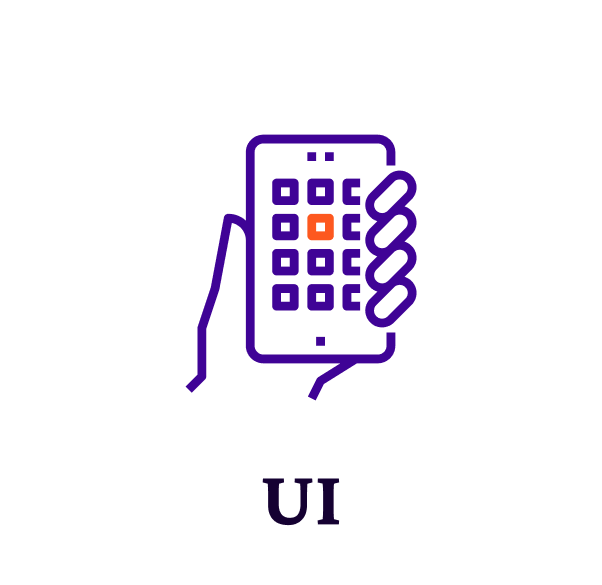
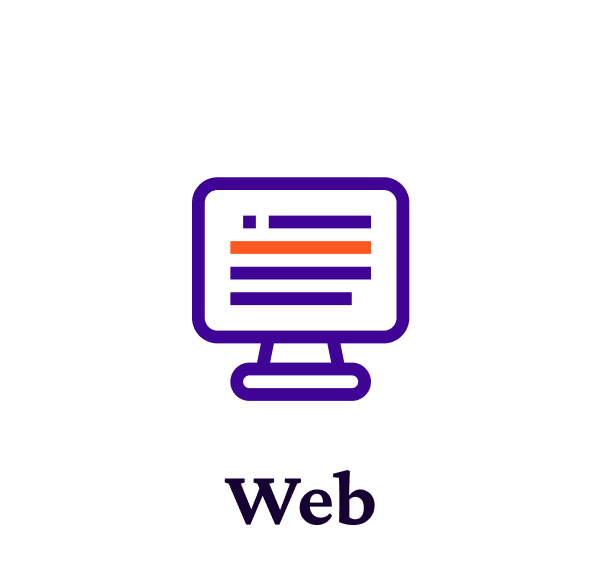
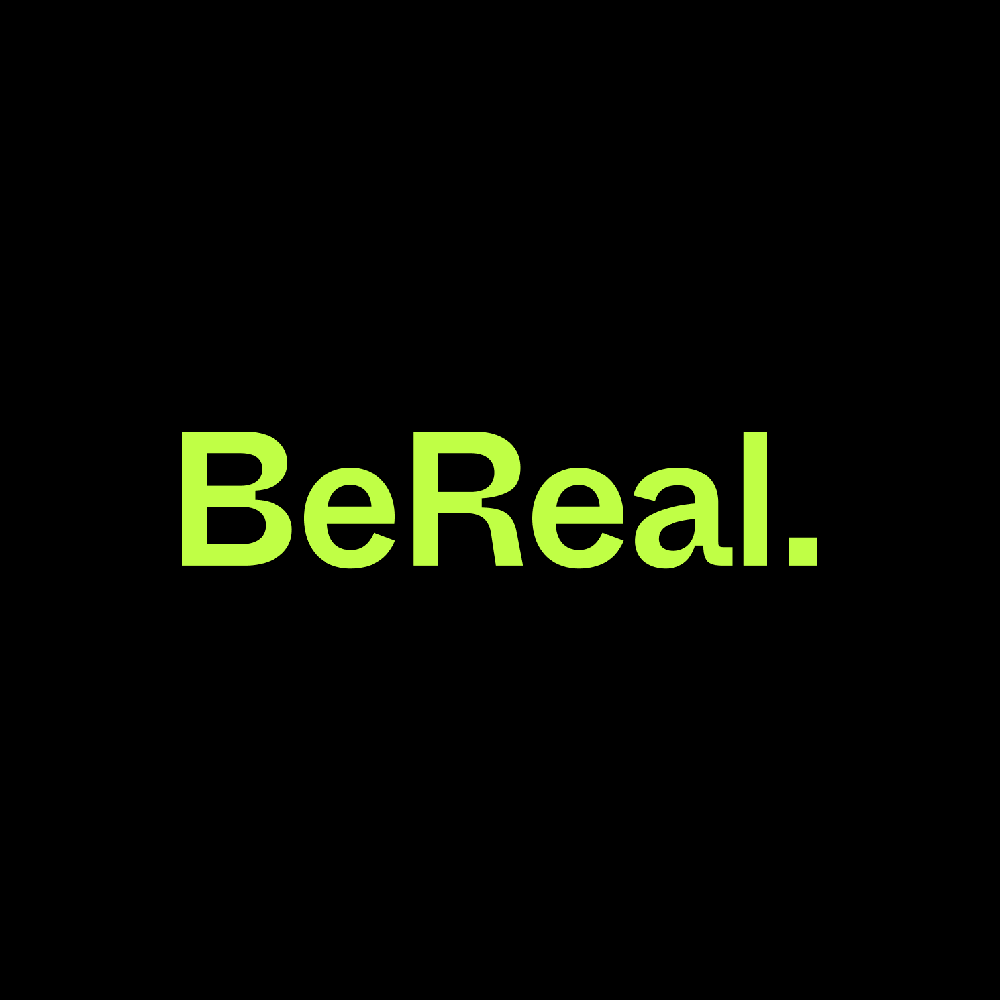
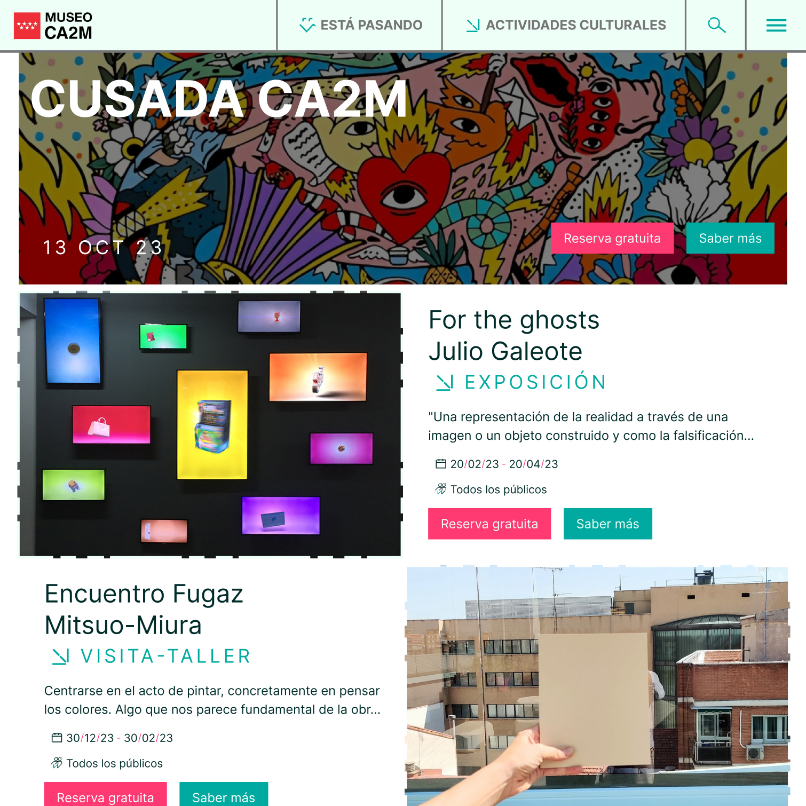

- Colaborar con diseñadores de producto, equipo de ventas y negocio para comprender las necesidades de investigación.
- Definir, seleccionar y desarrollar métodos apropiados de investigación y recopilación de datos.
- Desarrollar presupuestos, estrategias y cronogramas para el lanzamiento de productos.
- Transformar los insights en información fácilmente comprensible y próximos pasos que aplicar en el proyecto.
- Reclutar participantes, realizar estudios y analizar los datos recopilados.


- Realizar auditorías de UX/UI en páginas web creando componentes, proponiendo soluciones y ajustes basados en las métricas de análisis y el feedback de los usuarios.
- Identificar oportunidades para incorporar funcionalidades y contenido teniendo en cuenta el propósito de cada producto y las necesidades del usuario, cuidando los principios de usabilidad.
- Traducir los principios de la marca en contenido y campañas creativas.
- Desarrollar estrategias en base a analítica digital, análisis sobre competidores y sondeos de usuarios.
- Crear storytellings, buyer persona, users stories, etc.
- Analizar métricas como sesiones diarias, tiempo en página y tasa de cumplimiento de objetivos para evaluar la efectividad del contenido existente.
- Escribir contenido atractivo y fácil de usar que guíe al usuario y transmita la voz de la marca.

- Desarrollar estrategias en base a analítica digital, análisis sobre competidores y sondeos de usuarios.
- Crear storytellings, buyer persona, users stories, etc.
- Analizar métricas como sesiones diarias, tiempo en página y tasa de cumplimiento de objetivos para evaluar la efectividad del contenido existente.
- Escribir contenido atractivo y fácil de usar que guíe al usuario y transmita la voz de la marca.
-

Hemp Help | App mobile
Problema: "Parece que hay que hacer un master para usar CBD"Leer más ➜ -

Be Real | New Function & Rebranding
Problema:"A veces me da igual subir o no foto, la gente solo hace el chorra“Leer más ➜ -

CA2M | Microsite
El problema: “Pero entonces ¿qué exposiciones y actividades tenéis esta semana?“Leer más ➜